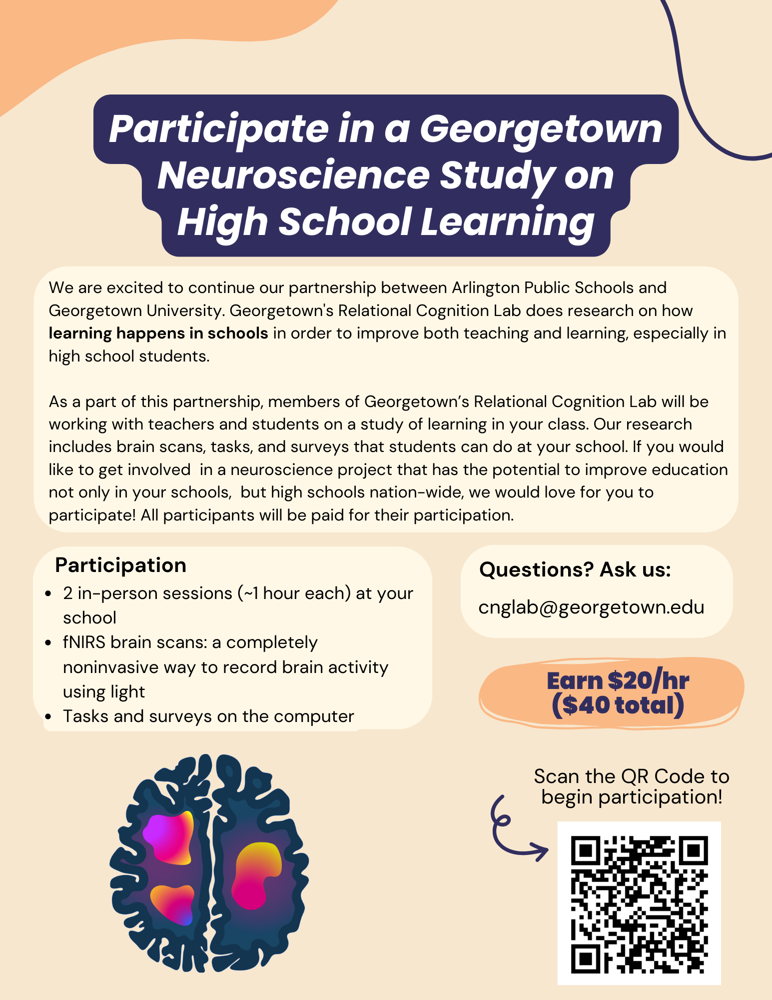

Overview
We will tack on Tuesday, November 26th to this week
, so it will
include plans for 4 class meetings. We will use this time to complete
Chapter 11:
Member functions, at which we finally arrive at writing our own
objects in C++.
Notice
I received an email from the Georgetown University neuroscience research study some of you heard about several weeks back letting me know no one from my classes had responded to the request for participants. So here is the recruitment flyer again. You can still sign on, and I'll free up classtime for participation if you are willing.

Tuesday, November 26th
Classwork
I was very pleased with what I saw in your git repos over the weekend, and the grade distribution reflects that: A: 23, B: 6, C: 2.
Notes on What is OO? were also very good, though not everyone got the
key idea I was hoping you would get from a course on object-oriented
programming. To quote Uncle Bob, The essence of OO is the inversion of
key dependencies to separate high level policies from low level
implementations.
Jack's notes were among my favorites - clear, concise, with all important
takeaways simply stated. He also knows how to use Markdown to make them look
nice - something you will all need to do before we start our Spring course.
Today I'll share the project you will work on next week, and we'll use class time to help each other with questions still remaining from our homework.
Friday, November 22nd
Classwork / Homework / Evaluation
Using our TDD dance
, complete as many of the exercise in
Chapter 11 Exercise Set 1: Doctest Exercises as time permits you to.
This assignment is due tomorrow, Saturday, November 22nd at 11:59 pm so that I can begin looking over your work early Sunday morning.
Next Tuesday we'll follow the same process we used last time, randomly selecting students who did A work to share their solutions. There will be no homework assignment during Thanksgiving break!
Wednesday, November 20th
Classwork
We'll begin class today with a quick update on what I've done to our textbook.
Then we will watch Uncle Bob's video, Clean Code: SOLID Principles, Episode 8.
As you watch the video, be prepared to answer the following questions afterward:
- What is code rot, and why does it happen?
- What is the design of a software product?
- According to Uncle Bob, what is the essential characteristic of Object-Oriented design?
Create a markdown file in your git repo named essence_of_oo.md
where you answer these questions. I'm looking for a serious answer to the last
question in particular that shows you understand what what presented in the
video.
Homework
Finish the essence_of_oo.md reflection you started in class if you
have not already done so. Use the remainder of your homework time to begin
using TDD to develop a Time object by completing the exercises in
Chapter 11 Exercise Set 1: Doctest Exercises. Be sure to do the
dance
as you work through these exercises!
Monday, November 18th
Classwork
We'll begin class by reflecting on what we can learn from our first programming
assignment. The grade distribution was: A: 17, B: 6, C:3,
E: 4. Not bad, but I would be happier still if there were even more
A's, and the main thing preventing that from happening came from students not
knowing how to do the dance
:
- Write a test with just enough scaffolding to make it compile (and fail).
- Commit!
- Write code to make the test pass.
- Commit again!
We also need to talk about how to keep unwanted things (meta data, binary files
and things that don't belong) out of your git repos. I filed issues for many
of you when I found a.out files, or .swp files, but
I want to take a minute in class to talk more about this. Also, never
put private information in a git repo! I found at least one private key,
which is just such private information.
The Blue Zee King is always playing the tunes I want to hear, and this time was no exception. I asked him to write a program to assign exercises to random students, and he delivered. He did such a fine job that I just stole his code (with attribution, of course!) so we could use it in class.
I highly recommend taking at look at this code, looking for his improvements
to the
pairs chooser from which I asked him to derive it. I'll discuss briefly
how he has written a generalization of the specific problem given him
to make his code potentially more useful. This is just the kind of
conversation in code
that I hope we will do more of.
We will use this today to select students to present solutions to our homework exercises. Only students who had A evaluations will be called upon to share their solutions.
Homework
Read Chapter 11: Member functions, trying the examples yourself and commiting them to your git repos.